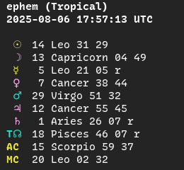
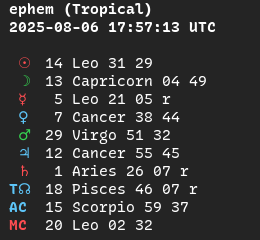
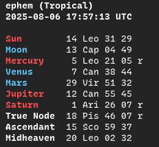
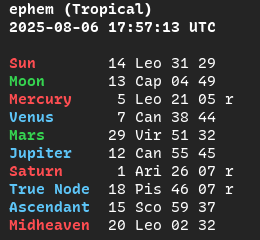

Display & Configuration
The configuration file
The ephem config lives at ~/.config/ephem/ephem.toml. If you open it in a text editor, it might look something like:
# ephem.toml
[display]
no-geo = true
classical = true
ascii = true
[location]
lat = -36.25
lng = 142.416667
[zodiac]
offset = 0
While running ephem --show-config prints the same information as:
Location defaults:
Latitude: -36.25
Longitude: 142.416667
Zodiac system:
System: Sidereal — Fagan-Bradley (index 0)
Display preferences:
Hide coordinates: enabled
Classical planets only: enabled
ASCII mode (no Unicode glyphs): enabled
--save-config tracks changes to single fields declared through optional flags, but not necessarily their omission, e.g. you accidentally configured a sidereal offset and can't change it back to tropical. In such cases, you may want to delete the old ephem.toml before making major changes:
rm ~/.config/ephem/ephem.toml
Configuration options
You already got a taste of --save-config when you set your location defaults, but let's take a look at all the configuration options available for the three calculation commands.
now, cast and cal
- -o N/--offset N: sidereal ayanamsa offset or None for tropical. Run --list-offsets to see all 47 available ayanamsas and find the corresponding index N.
- -a/--ascii: use ASCII text instead of Unicode glyphs. This can smooth over terminal incompatibilities, like strangely formatted cal tables.
now and cast only
- -t/--theme {sect,mode,element}: choose colorscheme by planetary sect, or sign mode or element. Defaults to sect.
- -c/--no-color: disable ANSI colors.
- -c/--classical: exclude Uranus through Pluto.
- -n/--node {true,mean}: choose lunar node calculation method.
- -A/--no-angles: don't print Ascendant or Midheaven.
- -G/--no-geo: don't print coordinates.
Display: format and color
Unicode vs ASCII output
By default, ephem prints planetary glyphs and full sign names for now and cast, and sign glyphs for cal. Appending -a/--ascii changes the format to full planet names and abbreviated signs:
# default format
ephem (Tropical)
2025-08-06 17:57:13 UTC
☉ 14 Leo 31 28
☽ 13 Capricorn 04 42
☿ 5 Leo 21 05 r
♀ 7 Cancer 38 44
♂ 29 Virgo 51 32
♃ 12 Cancer 55 45
♄ 1 Aries 26 07 r
♅ 1 Gemini 04 37
♆ 1 Aries 53 44 r
♇ 2 Aquarius 17 54 r
T☊ 18 Pisces 46 07 r
AC 15 Scorpio 56 49
MC 19 Leo 59 12
# --ascii flag
ephem (Tropical)
2025-08-06 17:57:13 UTC
Sun 14 Leo 31 28
Moon 13 Cap 04 42
Mercury 5 Leo 21 05 r
Venus 7 Can 38 44
Mars 29 Vir 51 32
Jupiter 12 Can 55 45
Saturn 1 Ari 26 07 r
Uranus 1 Gem 04 37
Neptune 1 Ari 53 44 r
Pluto 2 Aqu 17 54 r
True Node 18 Pis 46 07 r
Ascendant 15 Sco 56 49
Midheaven 19 Leo 59 12
Themes
| Sect | Mode | Element |
|---|---|---|
 |
 |  |
|  |  |
 |
--theme sect, the default, mimics Astrodienst's Hellenistic wheel style of coloring the visible planets by sect, including Mercury, whose sect is relative to the Sun.--theme modecolors the planets by the modality of their sign. This is a useful way to look for squares and oppositions.--theme elementcolors the planets by the element of their sign. This is a useful way to look for trines.
Suppressing geodata
Two flags, -G/--no-geo and -A/--no-angles, serve to hold back information from the output. You may consider using them in the following situations:
-G/--no-geo: You runephem nowand don't want to doxx yourself if you copy or screenshot the output.-A/--no-anglesfor hypothetical charts with a known time but no known coordinates. Sinceephem castfalls back to your location defaults, you might want to suppress both coordinates and angles with-AG.
Note: ephem cast with a date but no time suppresses angles by default. The reason date + time + no coordinates falls back is in case you're electing an event for your current location.